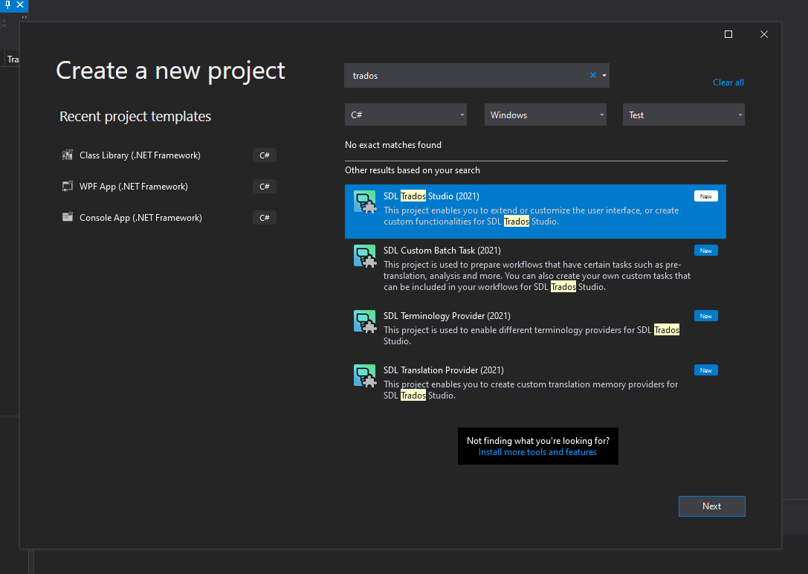
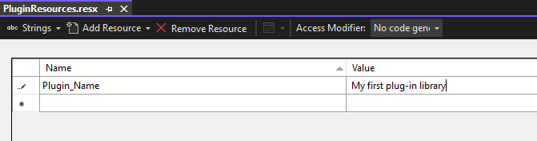

Building a plug-in
This section explains how to create a third-party plug-in for Trados Studio using a standard Visual Studio project template and describes how the process works under the hood.
Building a Plug-in
Trados Studio requires Microsoft .NET Framework 4.8 for third-party plug-in development. The Trados Studio SDK includes several Visual Studio project templates that provide a quick start for creating various types of plug-ins.
This topic creates a Translation Provider plug-in as an example and focuses on aspects common to all plug-in types.
First, ensure that you have followed the Setting up a Developer Machine guide.
Start Visual Studio and click New Project. Select one of the available Trados Studio project templates. If no Trados Studio project templates appear, install the latest Trados Studio SDK version from the developer hub.

The project templates already contain stubs for all the classes you need to implement.
First, open PluginProperties.cs, located next to the AssemblyInfo.cs file in the Properties folder. This file contains a single Plugin attribute that identifies the project as a plug-in. "Plugin_Name" refers to a resource string defined in PluginResources.resx.
[assembly: Sdl.Core.PluginFramework.Plugin("Plugin_Name")]
Open the PluginResources.resx file. It contains a string value called Plugin_Name.

This value defines the plug-in assembly name and defaults to the Visual Studio project name. Trados Studio displays this name in the plug-in management dialog. Define all localizable strings referenced by plug-in attributes or extension attributes in PluginResources.resx. The build compiles this .resx file into a .resources file and deploys it outside the plug-in assembly, allowing the host application to access the information without loading the assembly.
Every third-party plug-in must be deployed as a Plug-in Package (*.sdlplugin). This OPC-based file format (essentially a ZIP file) bundles the plug-in assembly, manifest file, and resources file. The Visual Studio project templates included with the Trados Studio SDK automatically generate a plug-in package during each build. The build process relies on the plug-in package manifest defined in pluginpackage.manifest.xml, which the project template provides.
<?xml version="1.0" encoding="utf-8"?>
<PluginPackage xmlns="http://www.sdl.com/Plugins/PluginPackage/1.0">
<PlugInName>TradosStudioTranslationProviderExample</PlugInName>
<Version>1.0.0.0</Version>
<Description>Plugin description</Description>
<Author>Name of the author</Author>
<Include>
<File>ThirdPartyLibrary.dll</File>
</Include>
<RequiredProduct name="TradosStudio" minversion="17.0" maxversion="17.9" />
</PluginPackage>
The plug-in package manifest defines some pieces of essential information:
- PlugInName: The friendly name of the plug-in. This name can differ from the one defined in
PluginResources.resx, because a single plug-in package can contain multiple plug-ins. - Version: The plug-in package version. The system uses this value to detect updated packages. For more information, see Plug-in deployment.
- Description: A description of the plug-in package.
- Author: The name of the plug-in author.
- RequiredProduct: Specifies which product this plug-in supports. You must include the minimum version and can optionally include a maximum version.
Setting the minimum version to 18.1 restricts installation to Trados Studio SR1 and above. - Include: A list of additional files to include in the plug-in package.
Every plug-in project must reference the following NuGet packages:
- Sdl.Core.PluginFramework: Provides the APIs for extension points.
- Sdl.Core.PluginFramework.Build: Provides the plug-in manifest creation build step using the standard MSBuild extension mechanism. See Plug-in manifest generator.
Note
Sdl.Core.PluginFramework.Build is required only at build time.
Build the project and inspect the output folder. It contains the following:
- The plug-in assembly,
MyPlugin.dll - A Plugins folder, which contains:
- The plug-in manifest,
MyPlugin.plugin.xml, listing all extension classes the plug-in provides. - The neutral plug-in resources file,
MyPlugin.plugin.resources, containing all localizable strings and images referenced in the plug-in manifest. The build compiles this fromPluginResources.resx.
- The plug-in manifest,
- The plug-in package,
MyPlugin.sdlplugin, bundling all of the above together with the plug-in package manifest.
After adding all the relevant information, build the project. Find the plug-in at the local path %AppData%\Trados\Trados Studio\19\Plugins\Packages\ (unless you changed the default path).
If the console displays the error Error 1 Failed to locate ResGen.exe and unable to compile plug-in resource file..., install .NET Framework 4.8.
You can now deploy the plug-in package in Trados Studio. See Plug-in deployment.